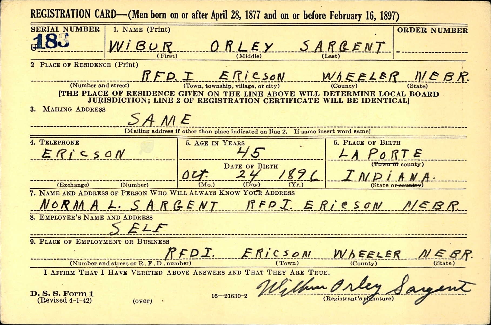
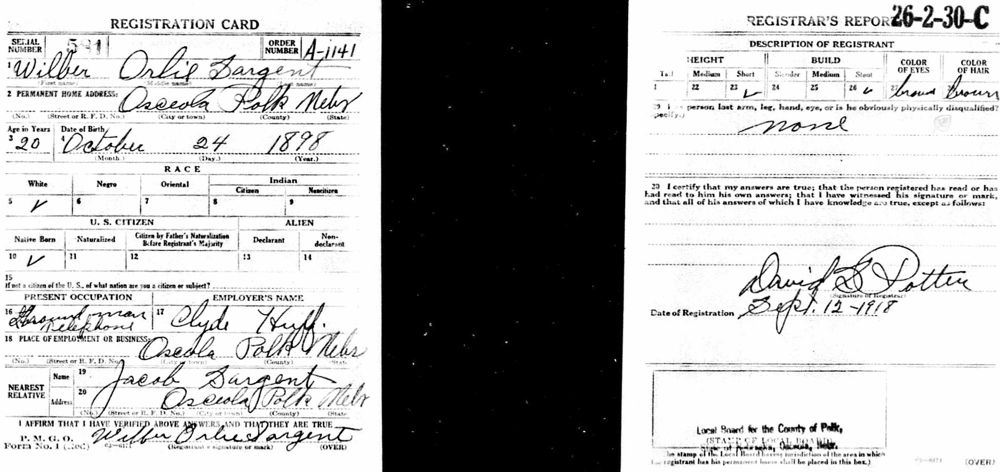
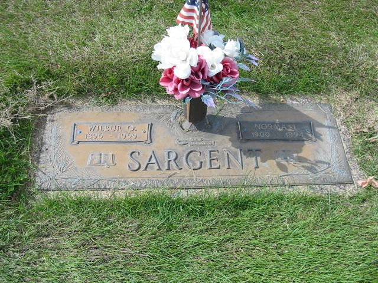

Wilbur Orllie Sargent 1896 - 1969
[ Home ] | [ Calendar ] | [ Surnames Index ] | [ Family History ]A farmer and the son of Jacob Sargent and Alice Bellmore, Wilbur Sargent, the third cousin three-times-removed on the mother's side of Nigel Horne, was born in La Porte, Indiana, USA on Oct 24, 18961,2,3,4,5 and married Norma Zollars (with whom he had 6 children: Mardell DeVern, Donna Elaine, Norma M, Wilfreda, Roberta and Dwayne, along with 2 surviving children) in Council Bluffs, Pottawattamie, Iowa, USA on Nov 12, 19246.
Throughout his life, he lived in Osceola, Polk, Nebraska, USA on Apr 1, 19307; and in Ericson, Wheeler, Nebraska on Apr 1, 19408 and in 1942. He served in the military from 1917 to 1918 (world War I Draft Registration Cards).
He died on Aug 26, 1969 in Grand Island, Hall, Nebraska2,3,4 and was buried there at Westlawn Memorial Cemetery after Aug 26, 19692.
Parents
- Jacob was born on Feb 18, 1856
- Alice Josephine was born on Jan 24, 1862
Children
- Mardell DeVern was born on Feb 26, 1925
- Donna Elaine was born on Jan 27, 1927
Citations
- Social Security Death Index - Findmypast
- U.S., Find A Grave Index, 1600s-Current Ancestry.com Operations, Inc.
- United States Billion Graves index - Findmypast
- United States Obituary Notices - Findmypast
- World War I Draft Registration Cards - Findmypast
- United States Marriages - Findmypast
- US Census 1930 - Findmypast (was age 32 and the head of the household)
- US Census 1940 - Findmypast (was age 41 and the head of the household)
Media
Wilbur Sargent - 1930 Census

Wilbur Sargent - WW2 draft

Wilbur Sargent - Norma Zollars - marriage certific

Wilbur Sargent - WWI draft

Wilbur Sargent - 1910 Census

Wilbur Sargent - Norma Zollars - gravestone

United States Marriages - US/FS/M/006771113/1
Social Security Death Index - USBMD/SSDI/506203501
US Census 1940 - USC/1940/1476442446
United States Billion Graves index - US/BMD/BILLION/023760259
World War I Draft Registration Cards - USM/WWIDR/1757192726
United States Marriages - R_321361153/1
United States Obituary Notices - US/TRIB/064061455
Family Tree

Generated by Ged2Site. Last updated on Jul 20, 2025